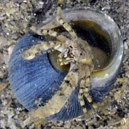
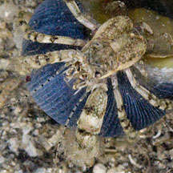
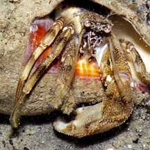
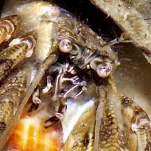
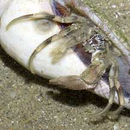
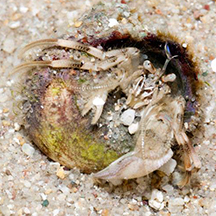

|
|
| hermit crabs text index | photo index |
| Phylum Arthropoda > Subphylum Crustacea > Class Malacostraca > Order Decapoda > Anomurans > hermit crabs |
| Tidal
hermit crab Diogenes sp.* Family Diogenidae updated Dec 2019
Where seen? This little hermit crab is commonly seen on many of our shores, on silty or sandy areas and among seagrasses. Sometimes in groups of many individuals, even when the tide is not very low. Many but not all of these hermit crabs may be Diogenes sp. Features: Body about 1-2cm long. Body and limbs not very hairy. Colour grey, brown or white without obvious markings. The left pincer is usually much larger than the right. |
|
 Pulau Semakau, Feb 09  |
 Changi, Aug 05  |
 Changi, Jun 05  |
 East Coast Park, Oct 2017
East Coast Park, Oct 2017 |
*Species are difficult to positively identify without close examination.
On this website, they are grouped by external features for convenience of display.
| Tidal hermit crabs on Singapore shores |
On wildsingapore
flickr
|
| Other sightings on Singapore shores |
 Cyrene Reef, Feb 16 Photo shared by Heng Pei Yan on facebook. |

| Berlayar Creek, Nov 2020 |
Links
|